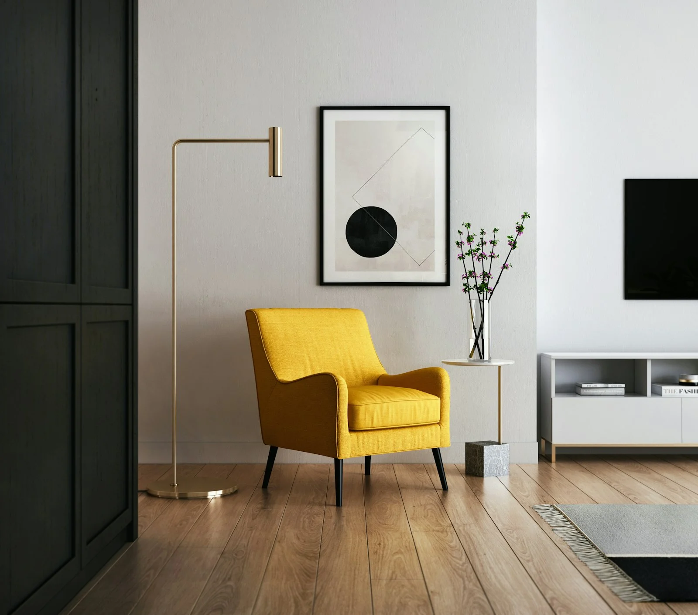

(01)Architecture d'intérieur · Paris
L'art de vivre chez soi.
Appartements, maisons et lieux de caractère. Nous dessinons des intérieurs calmes et lumineux, pensés dans le moindre détail et faits pour durer.
120Intérieurs livrés
12Ans de métier
4,9Note clients


Appartement MonceauParis 8e · 2025